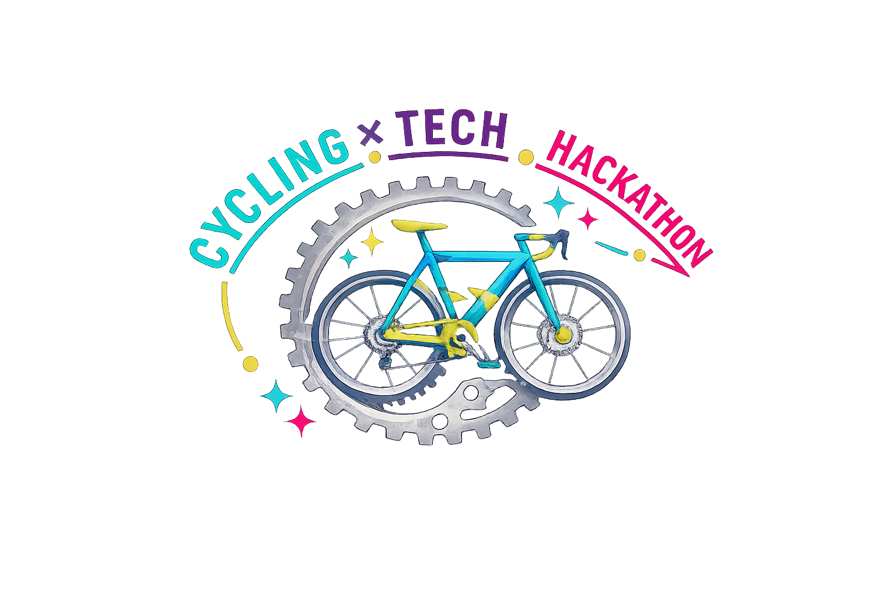

主催：石川県・金沢市

課題発見編
データ分析や専門家へのヒアリングを行い、地域の課題を発見する
課題解決編
ピッチとプロトタイプの体験会を行い、審査と投票で優秀賞を決める
ハッカソンに期待すること・開催の背景
自転車データを使って、石川県の未来の技術を考えるハッカソン。
自転車は移動手段だけにとどまらず、交通・まちづくり・健康・エコ・環境問題・安全・観光・スポーツと、様々な分野に発展できる可能性を秘めています。
本イベントでは、単なる自転車の課題解決にとどまらず、そこから広がる石川県の豊かな未来をテクノロジーの力で創り出す、自由で斬新なアイデアをお待ちしています！
Google Drive Viewer Placeholder